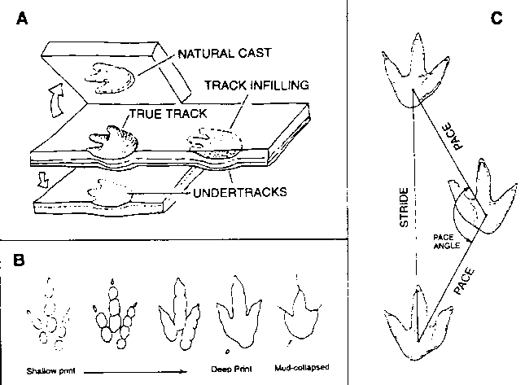

Un aperçu du suivi des dinosaures, Fig. 1
Copyright © 1994 par
Glen J. Kuban


Figure 1.
A. Formation et préservation des traces
Schéma montrant une vraie trace, un moulage naturel, des sous-traces et un remplissage de trace tel qu'ils pourraient apparaître dans des couches rocheuses. Adapté de Lockley (1991).
B. Variations de traces liées à la consistance du sédiment.
Toutes les traces montrées ont été faites par un seul dinosaure marchant sur des substrats de consistances différentes, avec les substrats plus fermes à gauche et les plus mous à droite. Remarquez l'absence de coussinets distincts dans les empreintes plus profondes (à droite). La trace la plus à droite souffre d'un « effondrement de boue » ou de « reflux de boue », où le sédiment mou s'effondre à l'intérieur de la dépression de la trace, déformant sa forme. Adapté de Thulborn (1990).
C. Mesures de base de la trajectoire.
Les angles de pas (également appelés angles de pas ou angulations de pas) peuvent être calculés en utilisant la trigonométrie une fois les mesures de pas et d'enjambement effectuées. Sur une trajectoire de quadrupède, ces mesures doivent être effectuées pour les empreintes arrière et antérieures. Il faut également mesurer les longueurs, largeurs, profondeurs et dimensions et angles des doigts de chaque empreinte individuelle.
(C) 1994, Glen J. Kuban
Retour à l'article Aperçu du suivi des dinosaures
Aller à la page d'accueil de Paluxy